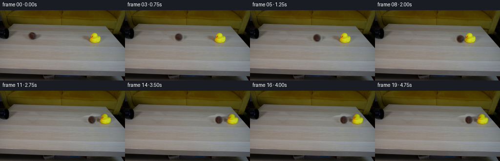
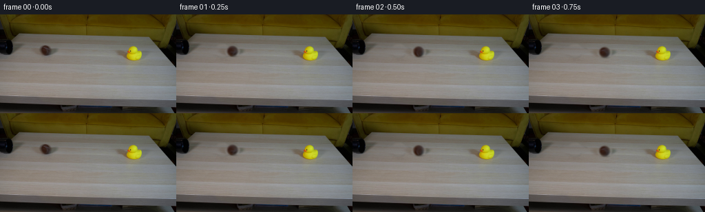
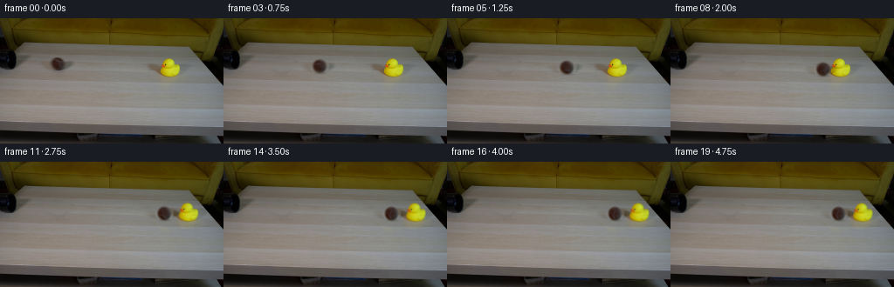
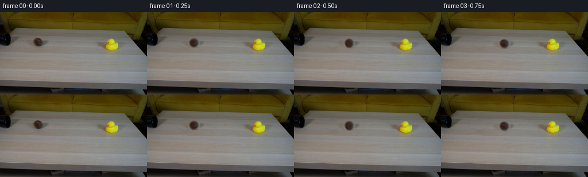

← 本轮 smoke 总览traex/GPT-6-Astra · 0008
text · 256×144 · 4.0 FPS · 20 帧 · 状态 complete · 输出 tokens 14146
原始任务Static locked-off single-shot with fixed frame throughout filmed with constant framerate in real-time. The scene shows a realistic scientific demonstration. The scene only contains the described setup and actions. A light beige coffee table with a small yellow rubber duck on it. A mustard yellow couch is in the background. There is a black pipe that points from the left side to the right side of the table. The brown tennis ball rolls straight out of the black pipe and hits the rubber duck.
当前保存结果
已保存候选与代码修改
这里按时间展示外部捕获的候选，每份均可单独播放。保存新版本不等于完成视觉检查；下方工具证据记录实际看过的图。
候选 01 · 2026-11-08T18:19:45.500380+00:00 · 点开播放与检查图
inspection.png

transition_check.png

代码变化
--- 上一保存版本
+++ 本次保存版本
@@ -0,0 +1,188 @@
+"""Local RGB compositing and rolling/collision dynamics for the supplied shot."""
+from pathlib import Path
+import math
+import numpy as np
+from PIL import Image
+import cv2
+from scipy.ndimage import gaussian_filter, binary_fill_holes, binary_dilation
+from artifact_io import save
+
+ROOT = Path(__file__).resolve().parent
+H, W = 144, 256
+Y, X = np.mgrid[:H, :W].astype(np.float32)
+
+
+def smoothstep(a, b, x):
+ t = np.clip((x-a)/(b-a), 0, 1)
+ return t*t*(3-2*t)
+
+
+def ellipse(cx, cy, rx, ry, feather=0.2):
+ r = np.sqrt(((X-cx)/rx)**2 + ((Y-cy)/ry)**2)
+ return 1-smoothstep(1-feather, 1+feather, r)
+
+
+def tabletop_repair(im, coverage, left, right):
+ """Continue the table's horizontal tonal bands, using only nearby RGB."""
+ out = im.copy()
+ rng = np.random.default_rng(159)
+ row_texture = gaussian_filter(im, (0.45, 1.15, 0))
+ for y in range(H):
+ if coverage[y].max() < 1e-5:
+ continue
+ xs = np.r_[np.arange(*left), np.arange(*right)]
+ # Fit local horizontal illumination separately on each scanline. This
+ # retains the real tabletop's longitudinal shading and grain bands.
+ values = row_texture[y, xs]
+ xx = (xs - xs.mean()) / 50
+ coeff = np.polyfit(xx, values, 2)
+ q = (np.arange(W) - xs.mean()) / 50
+ estimate = q[:,None]**2*coeff[0] + q[:,None]*coeff[1] + coeff[2]
+ grain = rng.normal(0, .65, (W, 1))
+ estimate += grain
+ out[y] = im[y]*(1-coverage[y,:,None]) + estimate*coverage[y,:,None]
+ return out
+
+
+def affine(layer, dx=0., dy=0., theta=0., pivot=(0.,0.)):
+ c, s = math.cos(theta), math.sin(theta)
+ px, py = pivot
+ matrix = np.array([[c, -s, px+dx-c*px+s*py],
+ [s, c, py+dy-s*px-c*py]], np.float32)
+ return cv2.warpAffine(layer, matrix, (W,H), flags=cv2.INTER_LINEAR,
+ borderMode=cv2.BORDER_CONSTANT, borderValue=0)
+
+
+class Shot:
+ def __init__(self, original):
+ self.original = original.astype(np.float32)
+ self.cx, self.cy, self.radius = 66.5, 52.3, 7.65
+ # Ball and its faint, soft moving shadow. The pipe is outside this mask.
+ ballcover = np.maximum(ellipse(66.5, 52.2, 11.0, 10.0, .17),
+ ellipse(65.0, 53.0, 22.0, 5.8, .17))
+ self.ballclean = tabletop_repair(self.original, ballcover, (30,44), (89,105))
+ # Separate the felt ball from its surrounding shadow by a feathered
+ # circular silhouette, then factor its illumination from its texture.
+ r = np.sqrt((X-self.cx)**2+(Y-self.cy)**2)
+ a = .5*(1-np.tanh((r-self.radius)/.8))
+ a[r > self.radius+3] = 0
+ self.ballalpha = a.astype(np.float32)
+ observed = (self.original-self.ballclean*(1-a[...,None])) / np.maximum(a[...,None], .12)
+ nx=(X-self.cx)/self.radius
+ ny=(Y-self.cy)/self.radius
+ nz=np.sqrt(np.maximum(0, 1-nx*nx-ny*ny))
+ basis=np.stack([np.ones_like(X), nx, ny, nz, nx*ny], -1)
+ core=(r < 6.45)
+ coeff=np.linalg.lstsq(basis[core], observed[core], rcond=None)[0]
+ self.light=np.clip(basis@coeff, [24,12,7], [105,100,95]).astype(np.float32)
+ # Preserve the photographed seam and felt instead of adding an
+ # unnaturally bright synthetic tennis-ball stripe.
+ self.texture=(np.clip(observed, [28,13,7], [115,108,105])-self.light)
+ self.texture *= (1-smoothstep(6.25,8.5,r))[...,None]
+ self.texture=np.clip(self.texture,-24,29).astype(np.float32)
+ # Reuse only the broad soft shadow, with the sphere itself excluded.
+ diff=self.original-self.ballclean
+ outer=1-ellipse(self.cx,self.cy,10.4,10.1,.10)
+ self.ballshadow=gaussian_filter(diff*outer[...,None],(.6,.6,0)).astype(np.float32)
+ # The duck's cast shadow and yellow reflection are also removed and
+ # reprojected with it. This is done only after physical contact.
+ bodycover=ellipse(195,56.5,13.0,12.8,.14)
+ shadowcover=ellipse(191.5,57.5,29.5,8.0,.12)
+ reflectioncover=ellipse(195,68.4,17.0,7.0,.17)
+ duckcover=np.maximum.reduce([bodycover,shadowcover,reflectioncover])
+ self.clean=tabletop_repair(self.ballclean,duckcover,(139,160),(223,236))
+ residual=self.ballclean-self.clean
+ chroma=(self.original[:,:,0]+self.original[:,:,1])/2-self.original[:,:,2]
+ solid=(chroma>49)&(X>182)&(X<207)&(Y>44)&(Y<68)
+ solid=binary_fill_holes(solid)
+ bodyweight=gaussian_filter(binary_dilation(solid,iterations=1).astype(np.float32),.55)
+ self.duckbody=residual*bodyweight[...,None]
+ self.duckshadow=residual-self.duckbody
+ self.duckpivot=(195.,65.8)
+ contour=(chroma>90)&(X>182)&(X<207)&(Y>44)&(Y<68)
+ self.duckpoints=np.column_stack([X[contour],Y[contour]])
+ self.duckbottom=self.duckpoints[:,1].max()
+ # All distances below are in the fixed camera's tabletop projection.
+ self.slope=.0545
+ self.hitx=176.7
+ self.v0=60.
+ self.decel=6.
+ d=self.hitx-self.cx
+ self.hit=(self.v0-math.sqrt(self.v0*self.v0-2*self.decel*d))/self.decel
+ vin=self.v0-self.decel*self.hit
+ mratio=.64
+ restitution=.45
+ self.ballv=vin*(1-restitution*mratio)/(1+mratio)
+ self.duckv=vin*(1+restitution)/(1+mratio)
+
+ @staticmethod
+ def slide(v, friction, t):
+ t=min(max(t,0),v/friction)
+ return v*t-.5*friction*t*t
+
+ def state(self,t):
+ u=t-self.hit
+ if u <= 0:
+ bx=self.cx+self.v0*t-.5*self.decel*t*t
+ return bx,0.,0.
+ bx=self.hitx+self.slide(self.ballv,14.,u)
+ dd=self.slide(self.duckv,35.,u)
+ tilt=.30*math.exp(-2.4*u)*math.sin(9.*u)
+ return bx,dd,tilt
+
+ def frame(self,t):
+ bx,dd,tilt=self.state(t)
+ dx=bx-self.cx
+ dy=dx*self.slope
+ if t <= self.hit:
+ frame=self.ballclean.copy()
+ else:
+ frame=self.clean.copy()
+ # Contact-constrained small rocking motion; the toy never floats.
+ px,py=self.duckpivot
+ local=self.duckpoints-np.array([px,py])
+ rotated_y=math.sin(tilt)*local[:,0]+math.cos(tilt)*local[:,1]+py
+ lift=self.duckbottom-rotated_y.max()
+ frame += affine(self.duckshadow,dd,dd*self.slope)
+ frame += affine(self.duckbody,dd,dd*self.slope+lift,tilt,self.duckpivot)
+ frame += affine(self.ballshadow,dx,dy)
+ # Compact contact occlusion under the rolling sphere, soft enough to
+ # match the photographed image's focus and low-key lighting.
+ contact=ellipse(bx+.9,self.cy+dy+self.radius-.05,6.1,1.35,.6)*.14
+ frame *= 1-contact[...,None]
+ # No-slip rotation: angular displacement is arc length / radius.
+ angle=dx/self.radius
+ turning=affine(self.texture,theta=angle,pivot=(self.cx,self.cy))
+ felt=np.clip(self.light+turning,0,255)
+ premult=affine(felt*self.ballalpha[...,None],dx,dy)
+ a=affine(self.ballalpha,dx,dy)
+ frame=frame*(1-a[...,None])+premult
+ return np.clip(frame,0,255)
+
+
+def main():
+ first=np.asarray(Image.open(ROOT/'first_frame.png').convert('RGB'))
+ assert first.shape==(H,W,3)
+ shot=Shot(first)
+ frames=[first.copy()]
+ # Brief real-camera exposure, not an interpolated slow-motion sequence.
+ for i in range(1,20):
+ t=i/4
+ exposures=[shot.frame(t+delta) for delta in (-.018,0.,.018)]
+ frames.append(np.round(np.mean(exposures,axis=0)).astype(np.uint8))
+ frames=np.stack(frames).astype(np.uint8)
+ assert np.array_equal(frames[0],first)
+ save(frames,ROOT)
+ tmp=ROOT/'.tmp'
+ tmp.mkdir(exist_ok=True)
+ Image.fromarray(np.clip(shot.clean,0,255).astype(np.uint8)).save(tmp/'clean_table.png')
+ np.save(tmp/'generated_rgb.npy',frames)
+ print('Saved',frames.shape,frames.dtype)
+ print('impact time:',round(shot.hit,3))
+ print('time, ball center x, duck displacement, duck tilt degrees')
+ for i in range(20):
+ bx,dx,theta=shot.state(i/4)
+ print(i/4,round(bx,2),round(dx,2),round(theta*180/math.pi,2))
+
+if __name__=='__main__':
+ main()
候选 02 · 2026-11-08T18:20:24.373657+00:00 · 点开播放与检查图
inspection.png

transition_check.png

代码变化
--- 上一保存版本
+++ 本次保存版本
@@ -35,9 +35,9 @@
# retains the real tabletop's longitudinal shading and grain bands.
values = row_texture[y, xs]
xx = (xs - xs.mean()) / 50
- coeff = np.polyfit(xx, values, 2)
+ coeff = np.polyfit(xx, values, 1)
q = (np.arange(W) - xs.mean()) / 50
- estimate = q[:,None]**2*coeff[0] + q[:,None]*coeff[1] + coeff[2]
+ estimate = q[:,None]*coeff[0] + coeff[1]
grain = rng.normal(0, .65, (W, 1))
estimate += grain
out[y] = im[y]*(1-coverage[y,:,None]) + estimate*coverage[y,:,None]
@@ -90,7 +90,7 @@
shadowcover=ellipse(191.5,57.5,29.5,8.0,.12)
reflectioncover=ellipse(195,68.4,17.0,7.0,.17)
duckcover=np.maximum.reduce([bodycover,shadowcover,reflectioncover])
- self.clean=tabletop_repair(self.ballclean,duckcover,(139,160),(223,236))
+ self.clean=tabletop_repair(self.ballclean,duckcover,(139,160),(218,226))
residual=self.ballclean-self.clean
chroma=(self.original[:,:,0]+self.original[:,:,1])/2-self.original[:,:,2]
solid=(chroma>49)&(X>182)&(X<207)&(Y>44)&(Y<68)
可观测工具行为
命令 1 · 2026-11-08T18:15:58.285731+00:00/bin/bash -lc "ls -la && cat prompt.txt && printf '\\n---RULES---\\n' && cat GENERATION_RULES.md"
exit 0 命令 2 · 2026-11-08T18:16:08.225163+00:00/bin/bash -lc "cat artifact_io.py && python - <<'PY'
from PIL import Image
import numpy as np
im=np.array(Image.open('first_frame.png'))
print(im.shape)
for y in range(0,144,4):
s=''
for x in range(0,256,4):
r,g,b=im[y:y+4,x:x+4].mean((0,1))
if max(r,g,b)<45:c='K'
elif max(r,g,b)<85:c='k'
elif max(r,g,b)-min(r,g,b)<15:c='g' if r<160 else '.'
elif r>180 and g>165 and b>135:c='L'
elif r>160 and g>105 and b<100:c='Y'
elif r>110 and g>65 and b<90:c='o'
elif r>150 and g>120 and b>90:c='b'
else:c='s'
s+=c
print(f'{y:3} {s}')
PY"exit 0 命令 3 · 2026-11-08T18:16:19.853416+00:00/bin/bash -lc "python - <<'PY'
from PIL import Image
import numpy as np
from scipy.cluster.vq import kmeans2
im=np.asarray(Image.open('first_frame.png'))
print('samples')
for y in [0,20,30,40,45,50,55,60,65,70,80,100,120,130]:
print(y,[(x,im[y,x].tolist()) for x in [0,10,20,30,40,50,60,65,70,80,100,120,150,175,180,190,195,200,205,210,220,240,255]])
print('Pipe luminosity mapped 0-100')
levels=' .,:;irsXA253hMHGS#9B&@'
for y in range(24,69):
s=''
for x in range(0,91):
v=im[y,x].mean();s+=levels[min(len(levels)-1,int(v/120*len(levels)))]
print(f'{y:02d} {s}')
print('duck color map: Y=(r-g>15,g-b>15), O=orange, k=dark')
for y in range(36,77):
s=''
for x in range(169,220):
r,g,b=im[y,x].astype(float)
c='.'
if r-g>12 and g-b>12:c='Y'
if r-g>40 and g-b<40:c='O'
if max(r,g,b)<60:c='k'
if r-g>12 and g-b>12 and r<145:c='y'
s+=c
print(f'{y:02d} {s}')
PY"exit 0 命令 4 · 2026-11-08T18:16:38.878134+00:00/bin/bash -lc "python - <<'PY'
from PIL import Image
import numpy as np
im=np.array(Image.open('first_frame.png')).astype(float)
print('duck ROI 172-212 col. y38-74, Y very yellow, y muted, o orange, .neutral')
print(' '+''.join(str(x//10%10) for x in range(172,213)))
print(' '+''.join(str(x%10) for x in range(172,213)))
for y in range(38,75):
s=''
for x in range(172,213):
r,g,b=im[y,x];v=(r+g)/2-b
if v>110:c='Y'
elif v>65:c='y'
elif v>30:c='o'
elif v>15:c=','
else:c='.'
if max(r,g,b)<60:c='k'
s+=c
print(f'{y:3} {s}')
print('ball ROI 51..84 color by luminosity')
print(' '+''.join(str(x//10%10) for x in range(50,87)))
print(' '+''.join(str(x%10) for x in range(50,87)))
levels='0123456789ABCDEF'
for y in range(39,66):
print(f'{y:3} '+''.join(levels[min(15,int(im[y,x].mean()/10))] for x in range(50,87)))
print('ball RGB')
for y in range(44,62,2):
print(y,[(x,im[y,x].astype(int).tolist()) for x in range(57,78,2)])
PY"exit 0 命令 5 · 2026-11-08T18:16:56.059301+00:00/bin/bash -lc "python - <<'PY'
import importlib.util
for m in ['cv2','scipy','numpy','PIL']:
print(m, bool(importlib.util.find_spec(m)))
from PIL import Image
import numpy as np
im=np.array(Image.open('first_frame.png')).astype(float)
print('DARK OBJECT: x48..88 y40..64: R-G colors only')
print(' '+''.join(str(x//10%10) for x in range(48,89)));print(' '+''.join(str(x%10) for x in range(48,89)))
for y in range(40,66):
s=''
for x in range(48,89):
r,g,b=im[y,x]; dif=r-g
s+='B' if dif>19 else 'b' if dif>14 else ',' if dif>9 else '.'
print(f'{y:3} {s}')
print('Duck rows RGB 180..209')
for y in [45,46,47,50,53,54,55,56,57,59,63,65,66,67,68,70]:
print(y,[(x, im[y,x].astype(int).tolist()) for x in range(180,210,2)])
PY"exit 0 命令 6 · 2026-11-08T18:17:24.972192+00:00/bin/bash -lc "python - <<'PY'
from PIL import Image
import numpy as np
im=np.array(Image.open('first_frame.png'))
for y in [47,50,52,54,56,58,60,62,64,66,68,70,72,74]:
print(y,[(x,im[y,x].tolist()) for x in [145,150,155,160,165,170,175,180,185,205,210,215,220,225]])
PY"exit 0 命令 7 · 2026-11-08T18:19:44.631425+00:00/bin/bash -lc "cat > generate.py <<'PY'
\"\"\"Local RGB compositing and rolling/collision dynamics for the supplied shot.\"\"\"
from pathlib import Path
import math
import numpy as np
from PIL import Image
import cv2
from scipy.ndimage import gaussian_filter, binary_fill_holes, binary_dilation
from artifact_io import save
ROOT = Path(__file__).resolve().parent
H, W = 144, 256
Y, X = np.mgrid[:H, :W].astype(np.float32)
def smoothstep(a, b, x):
t = np.clip((x-a)/(b-a), 0, 1)
return t*t*(3-2*t)
def ellipse(cx, cy, rx, ry, feather=0.2):
r = np.sqrt(((X-cx)/rx)**2 + ((Y-cy)/ry)**2)
return 1-smoothstep(1-feather, 1+feather, r)
def tabletop_repair(im, coverage, left, right):
\"\"\"Continue the table's horizontal tonal bands, using only nearby RGB.\"\"\"
out = im.copy()
rng = np.random.default_rng(159)
row_texture = gaussian_filter(im, (0.45, 1.15, 0))
for y in range(H):
if coverage[y].max() < 1e-5:
continue
xs = np.r_[np.arange(*left), np.arange(*right)]
# Fit local horizontal illumination separately on each scanline. This
# retains the real tabletop's longitudinal shading and grain bands.
values = row_texture[y, xs]
xx = (xs - xs.mean()) / 50
coeff = np.polyfit(xx, values, 2)
q = (np.arange(W) - xs.mean()) / 50
estimate = q[:,None]**2*coeff[0] + q[:,None]*coeff[1] + coeff[2]
grain = rng.normal(0, .65, (W, 1))
estimate += grain
out[y] = im[y]*(1-coverage[y,:,None]) + estimate*coverage[y,:,None]
return out
def affine(layer, dx=0., dy=0., theta=0., pivot=(0.,0.)):
c, s = math.cos(theta), math.sin(theta)
px, py = pivot
matrix = np.array([[c, -s, px+dx-c*px+s*py],
[s, c, py+dy-s*px-c*py]], np.float32)
return cv2.warpAffine(layer, matrix, (W,H), flags=cv2.INTER_LINEAR,
borderMode=cv2.BORDER_CONSTANT, borderValue=0)
class Shot:
def __init__(self, original):
self.original = original.astype(np.float32)
self.cx, self.cy, self.radius = 66.5, 52.3, 7.65
# Ball and its faint, soft moving shadow. The pipe is outside this mask.
ballcover = np.maximum(ellipse(66.5, 52.2, 11.0, 10.0, .17),
ellipse(65.0, 53.0, 22.0, 5.8, .17))
self.ballclean = tabletop_repair(self.original, ballcover, (30,44), (89,105))
# Separate the felt ball from its surrounding shadow by a feathered
# circular silhouette, then factor its illumination from its texture.
r = np.sqrt((X-self.cx)**2+(Y-self.cy)**2)
a = .5*(1-np.tanh((r-self.radius)/.8))
a[r > self.radius+3] = 0
self.ballalpha = a.astype(np.float32)
observed = (self.original-self.ballclean*(1-a[...,None])) / np.maximum(a[...,None], .12)
nx=(X-self.cx)/self.radius
ny=(Y-self.cy)/self.radius
nz=np.sqrt(np.maximum(0, 1-nx*nx-ny*ny))
basis=np.stack([np.ones_like(X), nx, ny, nz, nx*ny], -1)
core=(r < 6.45)
coeff=np.linalg.lstsq(basis[core], observed[core], rcond=None)[0]
self.light=np.clip(basis@coeff, [24,12,7], [105,100,95]).astype(np.float32)
# Preserve the photographed seam and felt instead of adding an
# unnaturally bright synthetic tennis-ball stripe.
self.texture=(np.clip(observed, [28,13,7], [115,108,105])-self.light)
self.texture *= (1-smoothstep(6.25,8.5,r))[...,None]
self.texture=np.clip(self.texture,-24,29).astype(np.float32)
# Reuse only the broad soft shadow, with the sphere itself excluded.
diff=self.original-self.ballclean
outer=1-ellipse(self.cx,self.cy,10.4,10.1,.10)
self.ballshadow=gaussian_filter(diff*outer[...,None],(.6,.6,0)).astype(np.float32)
# The duck's cast shadow and yellow reflection are also removed and
# reprojected with it. This is done only after physical contact.
bodycover=ellipse(195,56.5,13.0,12.8,.14)
shadowcover=ellipse(191.5,57.5,29.5,8.0,.12)
reflectioncover=ellipse(195,68.4,17.0,7.0,.17)
duckcover=np.maximum.reduce([bodycover,shadowcover,reflectioncover])
self.clean=tabletop_repair(self.ballclean,duckcover,(139,160),(223,236))
residual=self.ballclean-self.clean
chroma=(self.original[:,:,0]+self.original[:,:,1])/2-self.original[:,:,2]
solid=(chroma>49)&(X>182)&(X<207)&(Y>44)&(Y<68)
solid=binary_fill_holes(solid)
bodyweight=gaussian_filter(binary_dilation(solid,iterations=1).astype(np.float32),.55)
self.duckbody=residual*bodyweight[...,None]
self.duckshadow=residual-self.duckbody
self.duckpivot=(195.,65.8)
contour=(chroma>90)&(X>182)&(X<207)&(Y>44)&(Y<68)
self.duckpoints=np.column_stack([X[contour],Y[contour]])
self.duckbottom=self.duckpoints[:,1].max()
# All distances below are in the fixed camera's tabletop projection.
self.slope=.0545
self.hitx=176.7
self.v0=60.
self.decel=6.
d=self.hitx-self.cx
self.hit=(self.v0-math.sqrt(self.v0*self.v0-2*self.decel*d))/self.decel
vin=self.v0-self.decel*self.hit
mratio=.64
restitution=.45
self.ballv=vin*(1-restitution*mratio)/(1+mratio)
self.duckv=vin*(1+restitution)/(1+mratio)
@staticmethod
def slide(v, friction, t):
t=min(max(t,0),v/friction)
return v*t-.5*friction*t*t
def state(self,t):
u=t-self.hit
if u <= 0:
bx=self.cx+self.v0*t-.5*self.decel*t*t
return bx,0.,0.
bx=self.hitx+self.slide(self.ballv,14.,u)
dd=self.slide(self.duckv,35.,u)
tilt=.30*math.exp(-2.4*u)*math.sin(9.*u)
return bx,dd,tilt
def frame(self,t):
bx,dd,tilt=self.state(t)
dx=bx-self.cx
dy=dx*self.slope
if t <= self.hit:
frame=self.ballclean.copy()
else:
frame=self.clean.copy()
# Contact-constrained small rocking motion; the toy never floats.
px,py=self.duckpivot
local=self.duckpoints-np.array([px,py])
rotated_y=math.sin(tilt)*local[:,0]+math.cos(tilt)*local[:,1]+py
lift=self.duckbottom-rotated_y.max()
frame += affine(self.duckshadow,dd,dd*self.slope)
frame += affine(self.duckbody,dd,dd*self.slope+lift,tilt,self.duckpivot)
frame += affine(self.ballshadow,dx,dy)
# Compact contact occlusion under the rolling sphere, soft enough to
# match the photographed image's focus and low-key lighting.
contact=ellipse(bx+.9,self.cy+dy+self.radius-.05,6.1,1.35,.6)*.14
frame *= 1-contact[...,None]
# No-slip rotation: angular displacement is arc length / radius.
angle=dx/self.radius
turning=affine(self.texture,theta=angle,pivot=(self.cx,self.cy))
felt=np.clip(self.light+turning,0,255)
premult=affine(felt*self.ballalpha[...,None],dx,dy)
a=affine(self.ballalpha,dx,dy)
frame=frame*(1-a[...,None])+premult
return np.clip(frame,0,255)
def main():
first=np.asarray(Image.open(ROOT/'first_frame.png').convert('RGB'))
assert first.shape==(H,W,3)
shot=Shot(first)
frames=[first.copy()]
# Brief real-camera exposure, not an interpolated slow-motion sequence.
for i in range(1,20):
t=i/4
exposures=[shot.frame(t+delta) for delta in (-.018,0.,.018)]
frames.append(np.round(np.mean(exposures,axis=0)).astype(np.uint8))
frames=np.stack(frames).astype(np.uint8)
assert np.array_equal(frames[0],first)
save(frames,ROOT)
tmp=ROOT/'.tmp'
tmp.mkdir(exist_ok=True)
Image.fromarray(np.clip(shot.clean,0,255).astype(np.uint8)).save(tmp/'clean_table.png')
np.save(tmp/'generated_rgb.npy',frames)
print('Saved',frames.shape,frames.dtype)
print('impact time:',round(shot.hit,3))
print('time, ball center x, duck displacement, duck tilt degrees')
for i in range(20):
bx,dx,theta=shot.state(i/4)
print(i/4,round(bx,2),round(dx,2),round(theta*180/math.pi,2))
if __name__=='__main__':
main()
PY
python generate.py"exit 0 命令 8 · 2026-11-08T18:20:01.711090+00:00/bin/bash -lc "python - <<'PY'
import numpy as np
from PIL import Image
from generate import Shot
im=np.array(Image.open('first_frame.png'))
s=Shot(im)
f=np.load('.tmp/generated_rgb.npy')
for i in [0,1,4,8,9,12,19]:
x,dd,a=s.state(i/4)
print('\\nFRAME',i,'BALL',(x,52.3+(x-66.5)*s.slope),'Duck move',dd)
cx=int(round(x));cy=int(round(52.3+(x-66.5)*s.slope))
for y in range(cy-10,cy+11):
print(''.join('0123456789ABCDEF'[min(15,int(f[i,y,xx].mean()/10))] for xx in range(cx-12,cx+13)))
print('Ball core avg', f[i,cy-4:cy+5,cx-4:cx+5].mean((0,1)))
print('Clean removed ball values:')
for y in [40,45,46,48,50,52,54,56,58,60,62,66]:
print(y,' '.join(str(tuple(np.round(s.ballclean[y,x]).astype(int))) for x in [45,50,55,60,65,70,75,80,85,90]))
print('Clean removed duck row x145..235')
for y in [44,48,50,54,56,58,60,64,68,70,74,77]:
print(y,[(x,s.clean[y,x].round().astype(int).tolist()) for x in [155,165,175,185,195,205,215,225,235]])
print('Unchanged outside regions', np.max(np.abs(f[:,0:28].astype(int)-f[0,0:28].astype(int))))
print('frames0 equals',np.array_equal(im,f[0]))
PY"exit 0 命令 9 · 2026-11-08T18:20:24.097297+00:00/bin/bash -lc "python - <<'PY'
p='generate.py'
s=open(p).read().replace('coeff = np.polyfit(xx, values, 2)','coeff = np.polyfit(xx, values, 1)').replace('estimate = q[:,None]**2*coeff[0] + q[:,None]*coeff[1] + coeff[2]','estimate = q[:,None]*coeff[0] + coeff[1]').replace('(139,160),(223,236)', '(139,160),(218,226)')
open(p,'w').write(s)
PY
python generate.py
python - <<'PY'
from PIL import Image
import numpy as np
from generate import Shot
im=np.array(Image.open('first_frame.png'))
s=Shot(im)
f=np.load('.tmp/generated_rgb.npy')
print('Clean duck area max delta (where no duck/shadows):')
for y in [44,46,48,50,52,54,56,58,60,64,68]:
print(y,[(x,s.clean[y,x].round().astype(int).tolist()) for x in [175,185,195,205,215]])
for i in [0,8,9,10,13,19]:
print('duck',i)
for y in range(43,75):
out=''
for x in range(174,241):
r,g,b=f[i,y,x].astype(float);v=(r+g)/2-b
out+='Y' if v>110 else 'y' if v>65 else 'o' if v>30 else ',' if v>15 else '.'
print(out)
PY"exit 0 命令 10 · 2026-11-08T18:20:38.770029+00:00/bin/bash -lc "command -v ffmpeg || true
python - <<'PY'
import numpy as np
from PIL import Image
from pathlib import Path
first=np.asarray(Image.open('first_frame.png').convert('RGB'))
frames=np.stack([np.asarray(Image.open(f'frames/{i:02d}.png')) for i in range(20)])
assert frames.shape == (20,144,256,3)
assert frames.dtype == np.uint8
assert np.array_equal(frames[0],first)
p=np.load('pixels.npz')['pixels']
assert p.shape==(144,256,20)
decoded=np.stack([(p>>16)&255,(p>>8)&255,p&255],-1).transpose(2,0,1,3).astype('uint8')
assert np.array_equal(decoded,frames)
# The set and camera remain entirely fixed outside the action area.
assert np.all(frames[:,:28] == first[None,:28])
assert np.all(frames[:,80:] == first[None,80:])
print('All contract checks passed: 20 RGB frames, 256x144, lossless frame 00.')
print('Files:',', '.join(p.name for p in Path('.').iterdir() if p.is_file()))
PY"exit 0 保存候选 2 份；完成命令 10 次；可验证图片返回 0 张。原始 API 响应与完整日志保留在本地。